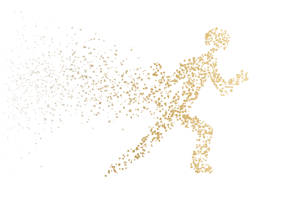
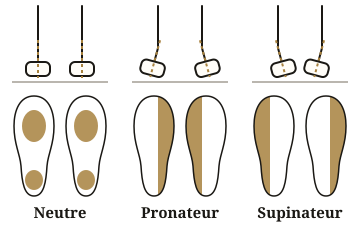

Réponds à quelques questions, comme avec un vendeur en magasin, et découvre les 5 chaussures les plus adaptées à ta façon de courir.
1 réponse sur 10
Astuce : regarde l'usure de tes anciennes chaussures. Usées côté intérieur : plutôt pronateur. Côté extérieur : plutôt supinateur. Usure centrée : neutre.
